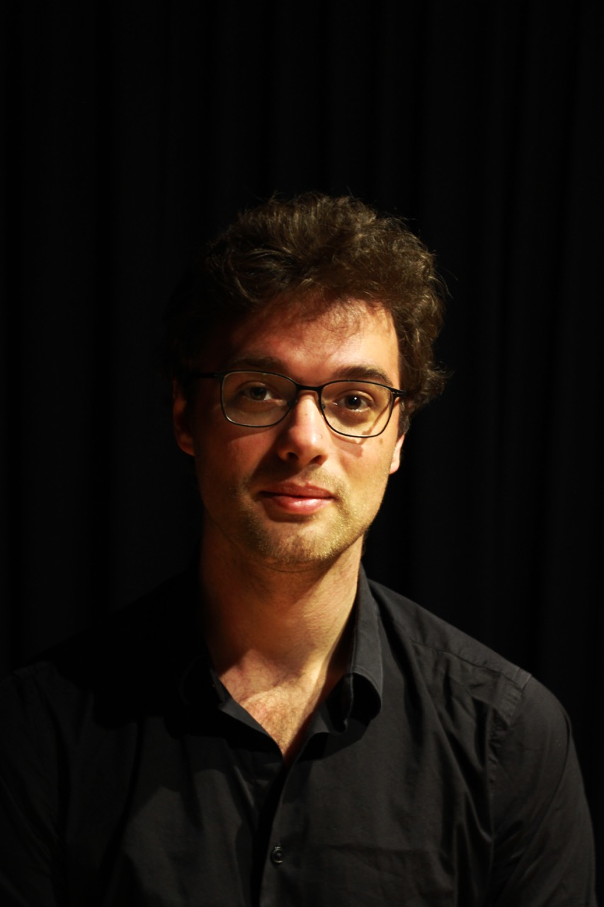

Bio
Jan Debel (°1989) volgde zijn eerste pianolessen op achtjarige leeftijd. Als tiener al engageerde hij zich als pianist en componist voor een aantal muziektheaterproducites, en als arrangeur voor kleine en grote ensembles.
Hij studeerde zowel Jazz als Klassieke muziek aan het Koninklijk Conservatorium van Antwerpen, waar hij les kreeg van Christoph Erbstösser, Erik Vermeulen, Levente Kende, Heidi Hendrickx en Nikolaas Kende. Hij volgde ook liedklas bij Lucienne van Deyck en Jozef De Beenhouwer, waar hij de eerste stappen richting liedbegeleiding zette. Daar ontwikkelde hij een grote affiniteit voor het liedrepertoire en besloot dit verder te exploreren.
Hij werkt samen met verschillende zangers en heeft twee vaste liedduo's: met de Belgische sopraan Louise Kuyvenhoven, en met de Belgische tenor Daan Corneillie. Naast het begeleiden van zangers houdt hij ook van kamermuziek en musiceert in verschillende bezettingen.
Hij werkt geregeld als repetitor voor LOD Muziektheater en Octopus koor.
Hij volgde masterclasses bij Richard Goode, Jan Wijn en Evgeni Koroliov. Hij stond in het verleden op podia als Klara in de Singel en Jazz Middelheim. Jan is als pianobegeleider ook verbonden aan de Academie van Mortsel-Edegem-Kontich.